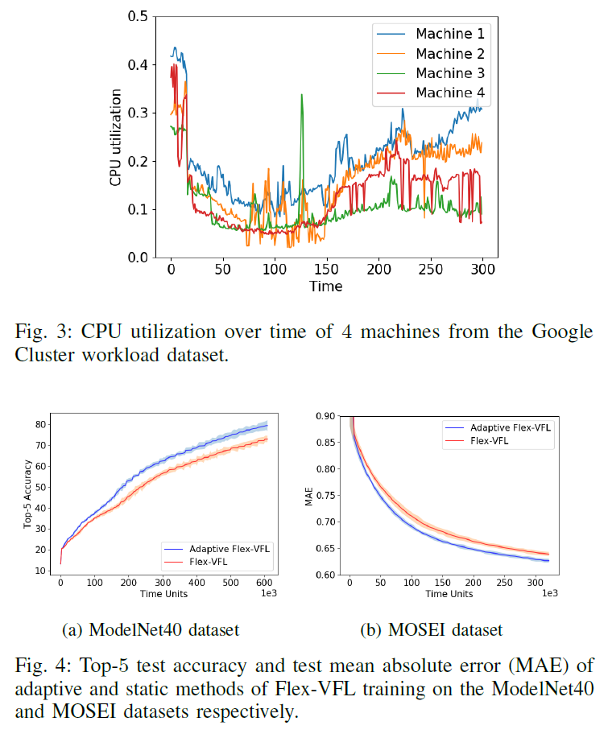
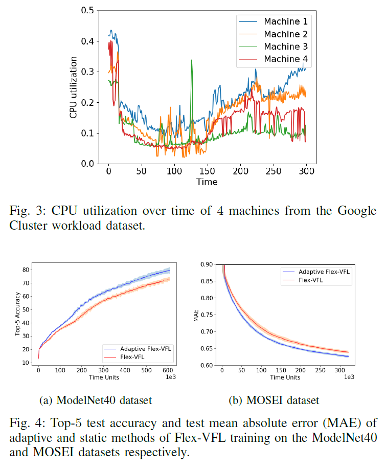

Timothy Castiglia Researcher and Software Engineer
Self-Supervised Vertical Federated Learning (2022)
A novel extension of self-supervised learning to vertical federated learning, where unlabeled data is used to train representation networks and labeled data is used to train a downstream prediction network.
Self-Supervised Vertical Federated Learning
We consider a system where parties store vertically-partitioned data with a partially overlapping sample space, and an aggregation server stores labels on a subset of data samples. Supervised vertical federated learning (VFL) algorithms are limited to training models using only overlapping labeled data, which can lead to poor model performance or bias. Self-supervised learning has been shown to be effective for training on unlabeled data, but the current methods do not generalize to the vertically-partitioned setting. We propose a novel extension of self-supervised learning to VFL (SS-VFL), where unlabeled data is used to train representation networks and labeled data is used to train a downstream prediction network. We present two SS-VFL algorithms: SS-VFL-I is a two-phase algorithm which requires only one round of communication between parties and the server, while SS-VFL-C adds communication rounds to improve model generalization. The design of SS-VFL-C is supported by our analysis of self-supervised learning over vertically-partitioned data. We show that both SS-VFL algorithms can achieve up to 2x higher accuracy than supervised VFL when labeled data is scarce at a significantly reduced communication cost.

Both of our proposed algorithms utilize Local Contrastive Learning, presented in Algorithm 2. Each party individually minimizes the following unsupervised objective. The optimization relies on specified positive and negative pairs in the dataset (typically created using data augmentation). The goal of optimization is to train representation networks to place positive pairs close to one another in representation space, and negative pairs far apart.
Above is the pseudo code for SS-VFL-Independent (SS-VFL-I), a natural extension of contrastive learning to the VFL setting. SS-VFL-I is a communication-efficient self-supervised vertical federated learning algorithm. At the start of training, the parties independently perform local contrastive learning to train their representation networks. This is done on local feature sets without communication. Then, each party computes the representations for labeled data and sends these representations to the server. The server trains its prediction model on these representations, again without communication. SS-VFL-I only requires sending representations for all labeled data once, its communication is equivalent to a single epoch of supervised VFL, which can be immensely beneficial in situations where communication is limited or costly.
Above is the pseudo-code for SS-VFL Coupled (SS-VFL-C), a self-supervised vertical federated learning algorithm that improves representation networks during downstream supervised training while maintaining the same communication cost as supervised VFL. SS-VFL-C trades the communication savings of SS-VFL-I in order to update representation networks, improving downstream supervised model performance. Just as in SS-VFL-I, each party uses local contrastive learning to train its representation network. However, the representation networks are not frozen at this point. In the second stage of SS-VFL-C, the same procedure as supervised VFL is followed. The parties share representations with the server, which trains a downstream prediction model. Then the server shares partial derivatives with the parties, and the parties update their representation networks. From this, we can see that SS-VFL-C has the same communication cost as supervised VFL, but with the added benefit of that the representation networks are pre-trained using unlabeled data.
For our experiments, we compare supervised VFL with SS-VFL-I and SS-VFL-C, using different amounts of data in the training set being labeled. The results of our experiments are shown in the above figures, where we plot the test accuracy for each dataset and labeled data fraction. The solid lines are the mean of 5 runs, while the shaded regions represent the standard deviation. For the ModelNet10 dataset, we can see at 1% and 5% labeled data, both SS-VFL algorithms outperform supervised VFL. Only at 10% labeled data and more is supervised VFL able to reach similar accuracies to the SS-VFL algorithms. We can see that SS-VFL-I and SS-VFL-C perform similarly in all cases, indicating that LocalCL was able to produce well-separable representations during unsupervised training. For the ImageNet100 dataset, both SS-VFL algorithms perform similarly when 1% of the data is labeled, reaching up to double the accuracy of supervised VFL. As the amount of labeled data increases, we can see that SS-VFL-C continues to reach higher test accuracy than the other two algorithms, providing the best model generalization by utilizing both labeled and unlabeled data to train party representation networks. In the case of ImageNet100, LocalCL has more difficulty distinguishing between similar classes. SS-VFL-C outperforms SS-VFL-I here by utilizing additional communication during downstream supervised training, allowing it to refine the representations and improve performance.
In the above table, we show the communication cost between the parties and the server for supervised VFL, SS-VFL-I, and SS-VFL-C to reach a target test accuracy. We can see in Table~\ref{comm.table} that SS-VFL-I has a much smaller communication cost than both other algorithms, regardless of the fraction of labeled data. SS-VFL-C, although requiring more communication, still reduces overall communication cost to reach target accuracies over supervised VFL in both datasets. For scenarios where labeled data is limited, both SS-VFL algorithms provide immense benefits in communication reduction.
Flexible Vertical Federated Learning with Heterogeneous Parties (2022)
Flexible Vertical Federated Learning (Flex-VFL): a distributed machine algorithm that trains a smooth, non-convex function in a heterogeneous distributed system with vertically partitioned data.
Flexible Vertical Federated Learning with Heterogeneous Parties
We propose Flexible Vertical Federated Learning (Flex-VFL), a distributed machine algorithm that trains a smooth, non-convex function in a distributed system with vertically partitioned data. We consider a system with several parties that wish to collaboratively learn a global function. Each party holds a local dataset; the datasets have different features but share the same sample ID space. The parties are heterogeneous in nature: the parties’ operating speeds, local model architectures, and optimizers may be different from one another and, further, they may change over time. To train a global model in such a system, Flex-VFL utilizes a form of parallel block coordinate descent, where parties train a partition of the global model via stochastic coordinate descent. We provide theoretical convergence analysis for Flex-VFL and show that the convergence rate is constrained by the party speeds and local optimizer parameters. We apply this analysis and extend our algorithm to adapt party learning rates in response to changing speeds and local optimizer parameters. Finally, we compare the convergence time of Flex- VFL against synchronous and asynchronous VFL algorithms, as well as illustrate the effectiveness of our adaptive extension.
 


C-VFL: Communication-Efficient Learning with Vertically Partitioned Data (ICML 2022)
Compressed Vertical Federated Learning (C-VFL): a server and multiple parties collaboratively train a model over vertically-partitioned data utilizing several local iterations and sharing compressed intermediate results periodically.
Multi-Level Local SGD: Distributed SGD for Heterogeneous Hierarchical Networks (ICLR 2021)
Multi-Level Local SGD is a distributed stochastic gradient method for learning a smooth, non-convex objective in a multi-level communication network with heterogeneous workers.
Spectrum Analyzer (2016-2018)
A web-based Spectrum Analyzer, a tool for electrical engineers. Built with the team from Critical Technologies, Inc. to be a product for telecom companies.
Spectrum Analyzer

The Spectrum Analyzer was built by the team at Critical Technologies, Inc. for a client. The goal of the product was to be able to view communication signals and determine types of interference remotely. This allowed technicians to diagnose an issue without having to drive out to a basestation. The product saves time and money for telecom companies.
The screen above shows three graphs: a spectrum, power vs. time, and Δpower vs. time. Typically, the bottom graph would have a flat region in the center. However, there is a spike moving across the band. This is a sweeping frequency that is being injected into the antenna. From this page, a technician could change various settings (Resolution Bandwidth, Span, Max/Min Hold, Averaging, etc.) to understand the interference better, and save the data to be viewed at a later time.
The software stack for this project was diverse. Starting from the bottom was an FPGA card. The FPGA quickly decoded incoming data, ran complex math calculations on it (Fast Fourier Transforms) and presented them to the operating system. Then, a Kernel Driver, written in C, would pass the data from Kernel space, to User Space. A user space driver, written in C++, would then process the data. The C++ class would either store the data in RAM, save it to file, or stream it to the web. This class was wrapped in the Python program which would take care of the networking for the web. The Python class would stream the data to client-side JavaScript to present to the user on the website. On top of all this, was a Robot that would move fiber connections to different sources of data. The robot motors were controlled by an Arduino, which was passed messages from a Raspberry Pi.
When the project started, we were given the FPGA, Kernel Driver, and an Arduino controlled Robot. We needed a working system within a month. Two other interns and myself worked tirelessly to build the rest of the software stack. I was forced out of my comfort zone of C++. I had to work on the lower-level, close to the kernel, and at the front-end level when building a website. I learned a great deal in a short amount of time. Together, the three of us produced a functional system at the end of the month.
This project is still ongoing. My role in the project is software and integration lead. The C++ and Python code that controls the core of the program is my responsibility, but I am familiar with (and have written pieces of) code elsewhere in the stack. In doing so, I can more easily integrate and test the system as a whole when other developers on the team add features.
Software Used
- Twisted Websockets
- TCP library bridging Python and JavaScript.
- Boost-Python
- A method of wrapping a C++ class inside Python.
- GNURadio
- Open Source Software for software-defined radios.
- CentOS 7
- C/C++
- Python
- Bash
- HTML/JS/CSS
Hardware Used
- Custom built robot
- Used for moving fiber optic connections remotely.
- HP ProLiant DL320
- Server used for early development.
- HPE Edgeline EL1000
- Server used for processing at large cell sites.
- Xilinx Zynq UltraScale+ MPSoC
-
- Board used for processing at smaller cell sites.
- Nallatech FPGA card 385a
Color Changing Lamp (2016)
Lamp that changes color temperature and intensity based on the ambient light. First place winner at the 2016 New York State Pollution Prevention Institute Student Competition.